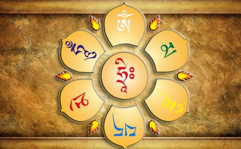

一、 1.六字大明咒出自《佛说大乘庄严宝王经》，又称：万咒之王、
2.六字大明咒梵语意为「皈依莲华上之摩尼珠」。此是藏传
3.藏传佛教徒相信此菩萨在
4.六字大明咒是用六种智慧来对治六道众生不同的烦恼：
「嗡」：白色之平等性智光，净除在天道中之骄傲及
「嘛」：绿色之成所作智光，净除阿修罗道中之忌妒，断除 斗争之苦。
「呢」：黄色之自生本智光，净除人道中之无明及贪欲，断 除生、老、病、死、贫苦之灾。
「呗」：蓝色之法界体性智光，净除畜牲道中愚痴，断除暗 哑苦。
「美」：红色之妙观察智光，净除饿鬼道中之悭吝，断除饥 渴苦。
「吽」：黑蓝色之大圆镜智光，净除地狱中之瞋恨，断除热 寒苦。
5.六字大明咒的表法：
「嗡」表天道；「嘛」表阿修罗道；「呢」表人道；
「呗」表
1.此六字大明陀罗尼，是观
2.若有人以此六字大明陀罗尼，身中项上戴持者。善男子！若有得见是戴持之人，则同见于金刚之身；又如见于
3.若有善男子、善女人，能依法念此六字大明陀罗尼，是人得无尽辩才，得清净智聚，得大慈悲。
4.如是之人得具
5.若此戴持之人，以手触于余人之身，蒙所触者，是人速得菩萨之位；若是戴持之人，见其男子、女人、童男、童女，乃至异类诸有情身，如是得所见者，悉皆速得菩萨之位。
6.如是受持六字大明咒之人，永不受生老病死苦爱别离苦，而得不可思议相应念诵。
7.若得彼（六字大明咒）者，不可思议无量
8.若有人书写此六字大明陀罗尼者，则同书写八万四千法藏而无有异。
9.若有人以天金宝，造作如微尘数如来。应。正等觉形象。如是作已，而于一日庆赞供养，所获果报不如书写此六字大明陀罗尼中一字所获果报功德，不可思议善住解脱。
10.此六字大明王陀罗尼难得值遇，如彼金刚不可破坏，如见无上智如无尽智，如如来清净智，如入无上解脱，远离贪瞋痴轮回苦恼，如禅解脱三摩地三摩钵底，如入一切法，而于恒时圣众爱乐。
11.持诵六字大明咒之人，没有贫富、男女、老幼之分，皆可使七代祖先超升解脱。
12.不单口唱此明咒始有功德，即着于身、持于手、蒙于家，亦得解脱生死之因。
13.藏传多记载将此明咒书写于长布片，藏于经筒，称为法 轮；一般以手转，或一风车、水车之力转之，称为转法 轮，可了脱生死轮回之苦。也有书于旗旆，飘扬空中，或见于碑者。
14.经上说，
15.虽然世尊能以神力将十二年间降两之雨滴数一一算出，然而对于念一次六字大明咒之功德利益却不能数其数量。
16.此世界之河川，及海洋之水滴可以尽数，然念一次六字大明咒之功德利益，依然数不尽。
17.虽然宇宙及须弥山之原子可以尽数，念一次六字大明咒之功德利益不能数尽。
18.持六字大明咒，对于病苦、刑罚、非时死之恐惧可以消除，
19.即使命终之时，通往下道诸门亦得而封闭，得以人、天之神受生，接触
20.持咒者之气息触及他人，他人最终亦得证果。
21.任何来生均得高贵外形，语调和雅，门第尊贵，并具有诸种美德，例如得入禅定深境、长寿，善于从事利生事业，门徒众多，财富，智慧，所求满愿，并因深信诸如来而得为佛子。
22.六字大明咒可封闭
23.如果将亡之人能闻六字明咒，或持向尸体或骨骸，该人之
24.受持六字大明咒者的身体疾病及障碍将会被净除；所造的语业被净化，种下妙音的种子；所有意念之无明、愚痴将被净除，得到佛菩萨智慧的加持。
25.受持六字大明咒者若精进的修持，可将凡夫之身口意转化成佛菩萨之金刚身口意，甚至可将肉身修练出
26.受持六字大明咒者，甚至只念诵一遍明咒，亦可获得无量智慧，最终将升起慈悲心，且圆满
27.凡有人或非人「见、闻、觉、受」（看见、听到、忆念、触及）到六字大明咒，他即刻种下成佛菩萨的因。
28.六字大明咒之咒印功德利益：一、降魔；二、
29.此六字大明咒于大乘中，最上精纯微妙。
30.此六字大明王难得值遇，但念一遍是人当得一切如来以衣服、饮食、汤药及座卧等资具一切供养。
31.若有得此六字大明王陀罗尼者，是人贪、瞋、痴三毒不能染污，犹如紫磨金宝，尘垢不可染着。
32.此六字大明陀罗尼，若有戴持在身中者，是人亦不染着贪瞋痴病。
33.六字大明咒可去除无始以来的业障，且如同诸佛菩萨亲临灌顶。